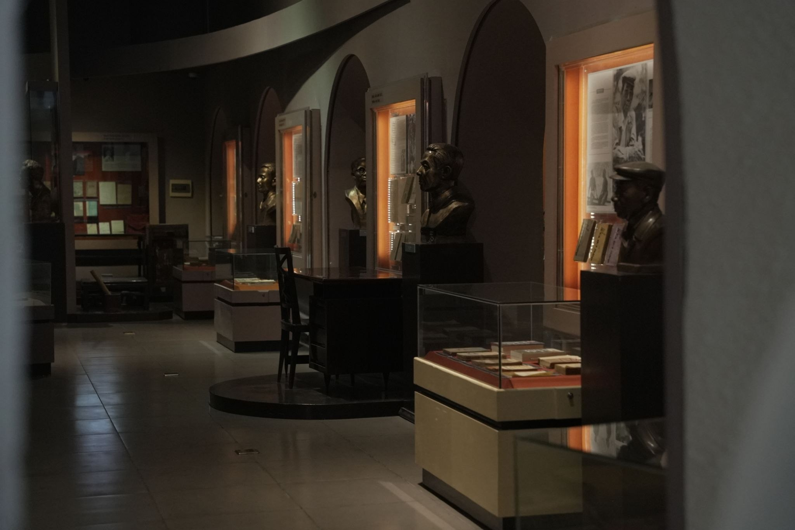
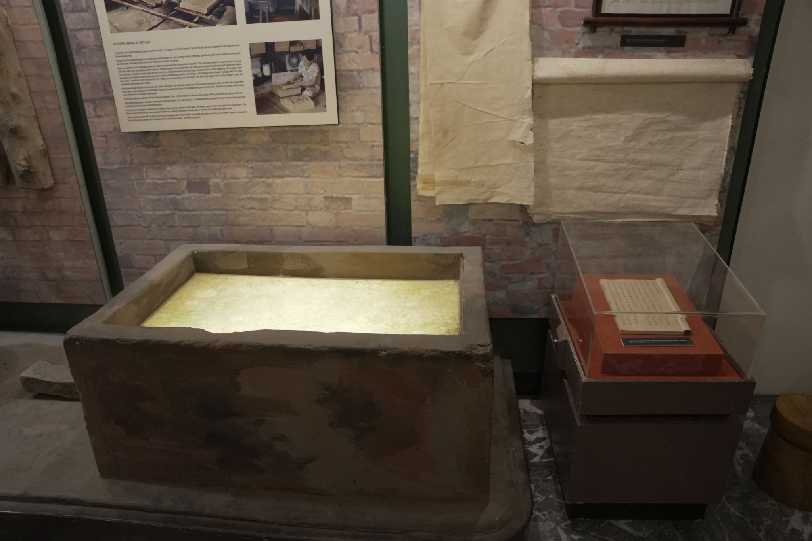
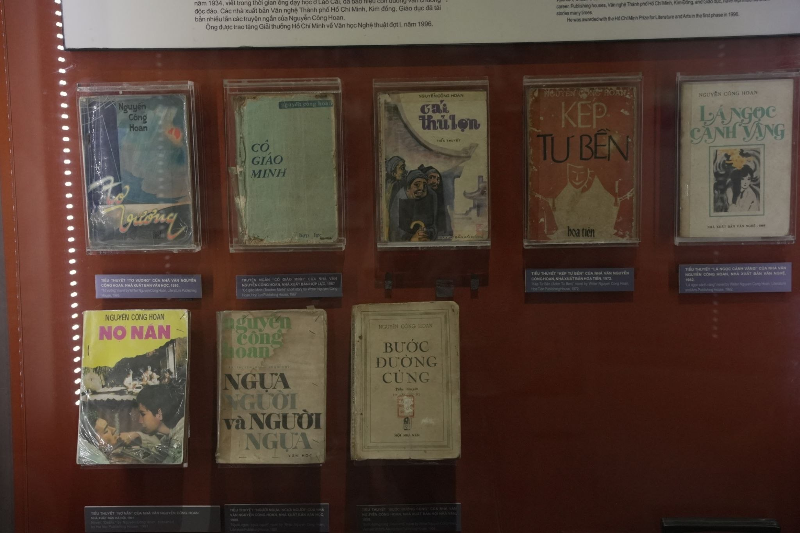
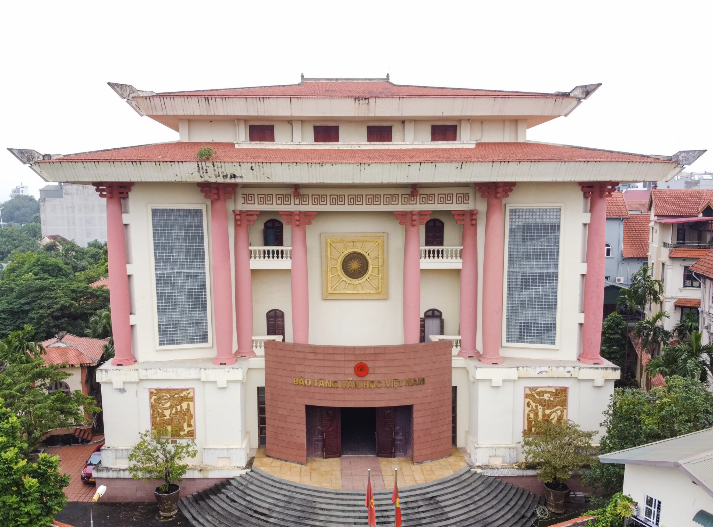

Trong bài
Văn chương Việt không chỉ tồn tại trên những trang sách. Đó còn là ký ức, con người và những dấu mốc làm nên diện mạo văn học qua nhiều thế hệ. Từ một ngôi trường từng đào tạo những người viết, nơi ấy hôm nay trở thành Bảo tàng Văn học Việt Nam – một “ngôi nhà” lưu giữ câu chuyện của văn chương dân tộc.
Khi lịch sử văn học được kể bằng hiện vật
Điểm đặc biệt của Bảo tàng Văn học Việt Nam nằm ở cách lịch sử văn học được tái hiện qua những hiện vật cụ thể. Thay vì chỉ đọc tên một tác giả hay một tác phẩm trong sách, người xem có thể tiếp cận văn học thông qua những dấu tích vật chất gắn với quá trình sáng tác và đời sống của người viết.

Với hàng nghìn tài liệu, hiện vật được sưu tầm và bảo quản, bảo tàng tạo nên một không gian để người xem hình dung hành trình phát triển của văn chương Việt qua nhiều thời kỳ.
Từ những trang viết đầu tiên
Một trong những không gian đáng chú ý là khu trưng bày giới thiệu lịch sử văn học kéo dài khoảng mười thế kỷ, từ thế kỷ X đến cuối thế kỷ XIX. Đây là giai đoạn văn học dân tộc gắn chặt với lịch sử, văn hóa và đời sống xã hội của từng thời kỳ.

Những chất liệu như giấy dó, vải, kim loại hay gỗ cho thấy văn chương Việt từng được lưu giữ bằng nhiều hình thức khác nhau. Cùng với đó là hình ảnh sĩ tử, trường thi, lều chõng và những câu chuyện xoay quanh con đường khoa cử.
Qua các hiện vật, một bức tranh về đời sống văn học trong xã hội xưa dần hiện ra. Văn chương không tồn tại tách biệt mà luôn gắn với giáo dục, tư tưởng, lịch sử và đời sống của con người.
Những hiện vật gắn với các nhân vật lịch sử, văn hóa cũng khiến câu chuyện ấy trở nên gần gũi hơn. Chẳng hạn, chiếc bàn có niên đại hơn 200 năm được giới thiệu gắn với Nguyễn Du không đơn thuần là một món đồ cổ. Nó trở thành điểm kết nối giữa người xem hôm nay với một giai đoạn quan trọng của lịch sử văn học dân tộc.
Từ ký ức của nhà văn đến ký ức của một thời đại
Không chỉ lưu giữ những dấu tích của văn học trung đại, bảo tàng còn giới thiệu nhiều tư liệu về các thế hệ nhà văn Việt Nam trong thời kỳ hiện đại.

Những khu trưng bày về các tác giả, vùng văn học và những giai đoạn lịch sử khác nhau giúp người xem nhận ra rằng mỗi thời kỳ đều tạo nên một diện mạo riêng cho văn chương Việt.
Ở tầng trưng bày về các tác giả đạt Giải thưởng Nhà nước, câu chuyện văn học được mở rộng qua nhiều không gian, từ Khu V, Nam Trung Bộ đến miền Bắc và miền Nam. Văn học khi ấy không chỉ là câu chuyện của cá nhân người viết mà còn phản ánh những biến động lớn của đất nước.
Một số hiện vật lại kể những câu chuyện nằm ngoài trang sách. Đó có thể là vật dụng gắn với cuộc đời một nhà văn, một bức tượng, một món đồ nội thất hay một dấu tích của thời đại.
Chính những chi tiết tưởng như nhỏ bé ấy giúp di sản văn học trở nên có hình hài. Người xem không chỉ biết một tác giả đã viết gì mà còn có thể hình dung phần nào họ đã sống, sáng tác và đi qua những năm tháng như thế nào.
Đi tìm một “ngôi nhà” để văn chương tiếp tục sống
Hành trình hình thành Bảo tàng Văn học Việt Nam có thể được nhìn như một hành trình đi tìm nơi lưu giữ ký ức của văn chương dân tộc. Từ Trường viết văn Quảng Bá đến một bảo tàng chuyên biệt, không gian này đã mang trên mình một nhiệm vụ mới: giữ lại những dấu vết của quá khứ để chúng tiếp tục có ý nghĩa với hiện tại.

Nhưng “ngôi nhà” của văn chương không chỉ được tạo nên bởi những bức tường hay tủ trưng bày. Một bảo tàng chỉ thực sự sống khi những câu chuyện bên trong nó được tiếp tục kể và có người muốn lắng nghe.
Đó có thể là một học sinh lần đầu biết đến một nhà văn qua hiện vật. Là một sinh viên tìm thấy cảm hứng cho bài viết của mình. Là một người yêu sách muốn nhìn thấy những dấu tích của những tác giả mình từng đọc. Hay đơn giản là một du khách tò mò muốn biết văn học dân tộc đã đi qua những chặng đường nào.
Mỗi người bước vào bảo tàng đều có thể bắt đầu một hành trình riêng. Có người đi tìm một tác giả, có người tìm một thời đại, có người tìm lại ký ức về một tác phẩm. Và cũng có người chỉ đến để rồi bất ngờ nhận ra rằng văn chương không xa xôi như mình từng nghĩ.
Sau cùng, đi tìm một “ngôi nhà” cho văn chương Việt cũng chính là đi tìm cách để những giá trị đã được tạo nên trong quá khứ tiếp tục đối thoại với con người hôm nay.
Bảo tàng Văn học Việt Nam vì thế không chỉ lưu giữ những gì đã qua. Nơi đây còn góp phần đặt những câu chuyện cũ vào một không gian mới – để văn học được nhìn thấy, được khám phá và tiếp tục sống trong ký ức của những thế hệ sau.
Mỗi trang viết đều có một thời điểm được sinh ra, nhưng giá trị của văn chương có thể vượt qua thời gian. Bằng việc lưu giữ hiện vật, tư liệu và câu chuyện của nhiều thế hệ, Bảo tàng Văn học Việt Nam đang góp phần giữ cho văn chương Việt một “ngôi nhà” – nơi quá khứ được bảo tồn và những câu chuyện mới vẫn có thể bắt đầu.
Bảo tàng Văn học Việt Nam